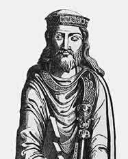
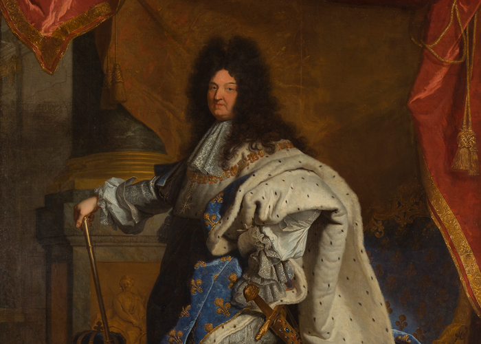
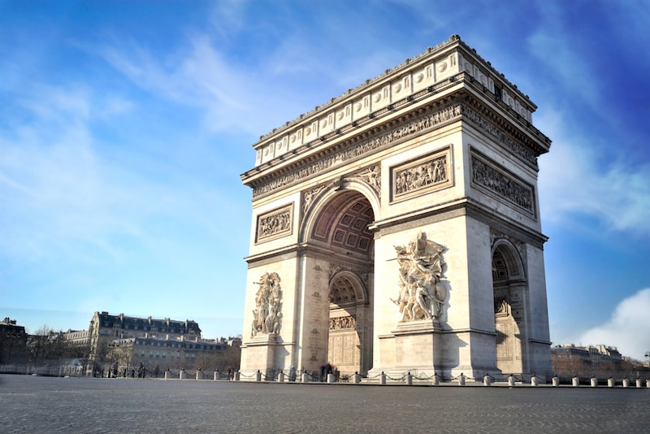
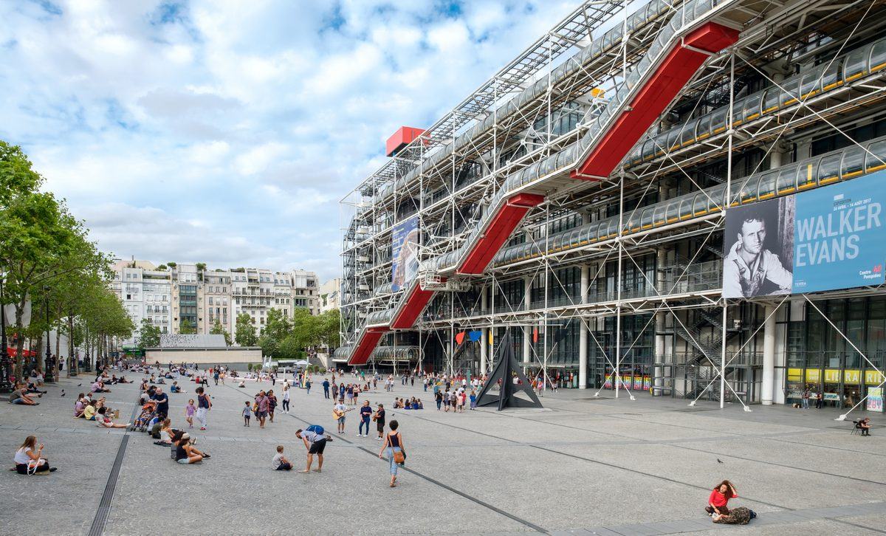

In the late 3rd century BC, a tribe of Celtic Gauls called the Parisii founded Paris on the land now known as Île de la Cité. After centuries of conflict between the Gauls and Romans, Julius Caesar’s legions seized control of the region in 52 BC. Christianity arrived in the 2nd century AD, and the 5th century saw the end of Roman rule with the arrival of the Franks. In 508 AD, Clovis I, the Frankish king, united Gaul as a kingdom and established Paris as the capital, naming it in honor of the original Parisii tribe.
Paris prospered during the Middle Ages: in the 12th century, construction began on the cathedral of Notre Dame (work continued for nearly 200 years), while the marshy Marais area north of the Seine was drained and settled to become what’s known today as the Right Bank. The Sorbonne (university) opened its doors in 1253, the beautiful Sainte Chapelle was consecrated in 1248 and the venerable Louvre Museum got its start as a riverside fortress around 1200. Yes, the history of Paris included Vikings! Scandinavian Vikings (also known as Norsemen, or Normans) began raiding France’s western coast in the 9th century; after three centuries of conflict, they started to push toward Paris. These conflicts gave birth to the Hundred Years War between Norman England and Paris’ Capetian dynasty, eventually resulting in the French defeat at Agincourt in 1415 and English control of Paris in 1420. In 1429, a 17-year-old girl named Jeanne d’Arc re-rallied the French troops to defeat the English at Orleans. With the exception of the Calais area north of Paris, the English were expelled from France for good by 1453. The Renaissance moved Paris forward at the end of the 1400’s, and many of the city’s signature buildings and monuments sprang up during this time period. By the late 16th century Paris was again up in arms, this time in the name of religion. Clashes between the Huguenot Protestants and the Catholics sank to their darkest levels in 1572 with the St. Bartholomew’s Day massacre of 3,000 Huguenots who were in in town to celebrate the wedding of Henri of Navarre (King Henri IV).
In 1643, at the young age of five, Louis XIV, also known as the Sun King, ascended to the throne and ruled France until 1715. His reign saw the national treasury nearly collapse due to costly wars overseas and extravagant domestic spending. Louis XIV’s most enduring legacy is the Palace of Versailles, located 23km (15 miles) southwest of Paris. Whatever the ups and downs of the French monarchy, they found a way to support the American Revolution with money and arms. Despite this, or perhaps because if it, the excesses of Louis XVI (the Sun King’s great-great-great-grandson) and his capricious queen, Marie-Antoinette, led to an uprising of Parisians on July 14th, 1789. Citizens stormed the Bastille prison, kick-starting the French Revolution.
The populist ideals of the revolution’s early stages quickly gave way to what became known as the Reign of Terror, wherein many of the original “patriots” got uncomfortably cozy with Madame la Guillotine. The unstable post-revolution government was consolidated in 1799 under a young Corsican general, Napoleon Bonaparte, who adopted the title First Consul. In 1804, the Pope crowned him Emperor of the French, and Napoleon proceeded to sweep most of Europe under his thumb. Napoleon’s hunger for conquest led to his eventual defeat, first in Russia in 1812 and later at Waterloo, Belgium in 1815. Napoleon’s legacy however was not one solely of defeat, as the modern French legal system is based on his approach to government and many monuments such as the massive Arc de Triomphe were built as a result of his leadership.
Following Napoleon’s 2nd exile, after his final defeat at Waterloo, France faltered under a string of mostly inept rulers until a coup d’etat in 1851 brought a new emperor to power, Napoleon’s own nephew, Napoleon III. Yes, the history of Paris has two Napoleons! During the 17 years of his rule, he oversaw the construction of a flashy new Paris, with wide boulevards, sculptured parks and – not insignificantly – a modern sewer system. Napoleon III and his civic planner, Baron Haussmann, gave us the Paris we see today, for the most part. Almost all of medieval Paris was eradicated, but bits of it remain, mostly in the Marais neighborhood, and in a section preserved inside the grounds of the Louvre. Like his namesake uncle, however, this Napoleon and his penchant for pugnacity led to a costly and eventually unsuccessful war, this time with the Prussians in 1870. When news of their emperor’s capture by the enemy reached Paris, the masses took to the streets, demanding that a republic be created. Despite its bloody beginnings, the Third Republic ushered in the glittering halcyon years of the belle epoque. Both Napoleons played an important role in the history of Paris and France as a whole. The belle epoque was famed for its Art Nouveau architecture and a barrage of advances in the arts and sciences. The emblematic Eiffel Tower was born of this time (1889). The Statue of Liberty was sent to America in this time (1886). By the 1930’s, Paris had become a worldwide center for the artistic avant-garde and in a way became the world capital for free-thinking intellectuals. This era was cut short by the Nazi occupation of 1940, and Paris remained under Germany’s rule until August 25, 1944. The Allied forces that retook the city were spearheaded by Free French units in order to give the French the honor of liberating their capital. After the war, Paris regained its position as a creative hotbed and nurtured a revitalized liberalism that reached a crescendo in the student-led ‘Spring Uprising’ of 1968. The Sorbonne University was occupied, barricades were erected in the Latin Quarter, and some 9 million people nationwide were inspired to join in a paralyzing general strike, drawing attention to their increasing dissatisfaction with the rigidity of French institutions.
During the 1980s, President Francois Mitterand initiated the futuristic grands projets, a series of ambitious building projects that garnered widespread approval even when the results were sometimes popular failures. Responses to the flashier examples, like the Centre Pompidou and the glass pyramids in the Louvre, have ranged from appalled ‘mon Dieux’ to rapture; if nothing else, the projets invigorated dialogue about the Parisian aesthetic and have added to the storied history of Paris. Paris’s elegance survives into the current day thanks to aggressive preservation efforts, but looks to the future with a huge expansion and improvement of the metro system (to be finished by 2030), and with the rededication of pedestrian and bike-friendly policies.
